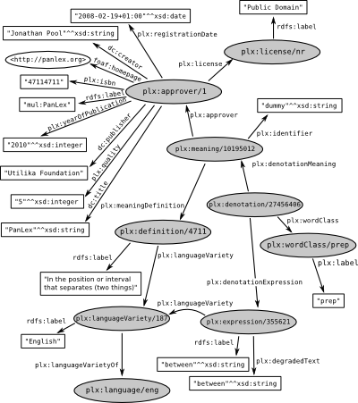

To make panlingual lexical translation possible, the PanLex project is constructing a database designed to include translations among all words (and word-like phrases) of the languages of the world. We are gathering translations from thousands of dictionaries, glossaries, vocabularies, thesauri, word lists, wordnets, and other such published and unpublished resources. We subject the translations found there to a set of standards, so they may be combined into a unified network.
Today’s version of the database operates under an open-source database management system (PostgreSQL) running on a Linux server. In addition to command-line access for administrators of the project and special-purpose access for researchers, access to the database for demonstration use is provided via public web interfaces.
Metrics: Triples Classes - Instances Properties Usage count
Example Resources:
Example Queries: